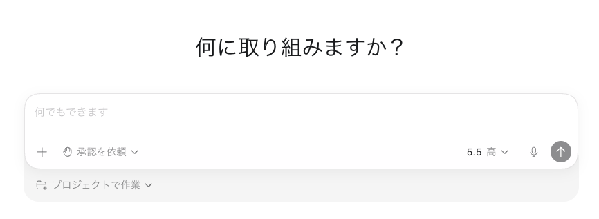
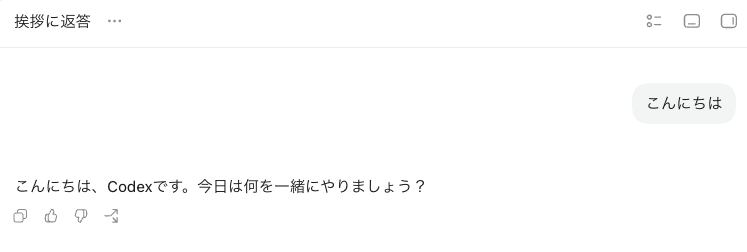
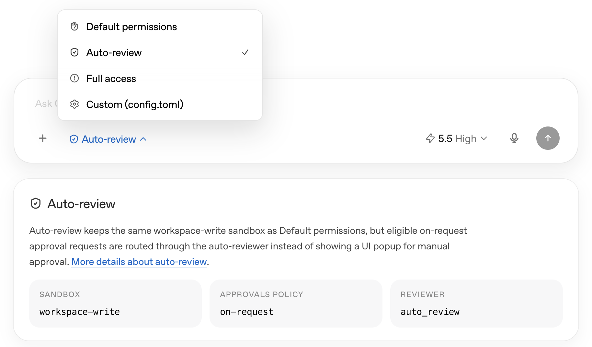
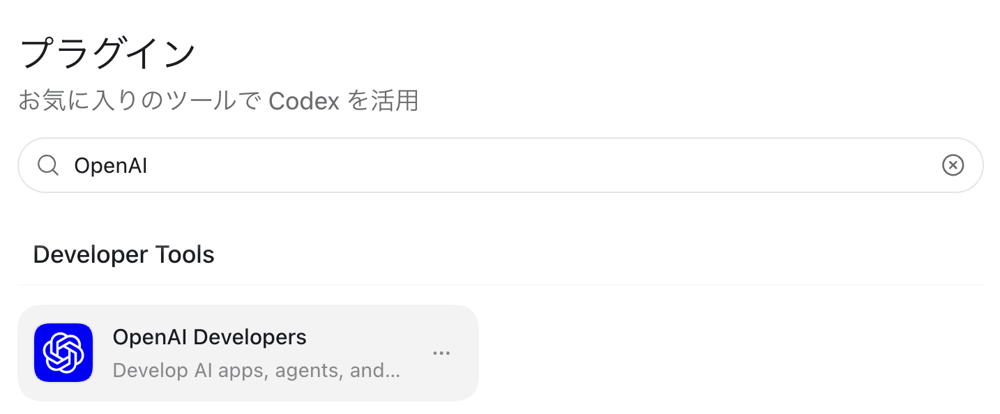

Codex開発基礎
- Event:
小規模開発のリアルを語ろう
- Presented:
2026/06/23 nikkie（Codex Ambassador直伝！）
Codex App を使った開発を体験しましょう
まずはインストールを
nikkieはデモの都合で
/高速
Codex Appインストール
macOSまたはWindows（Linuxの方ごめんなさい🙏）
ChatGPTのアカウントでサインイン
お前、誰よ
nikkie（にっきー） [1] ・Codex Ambassador (Tokyo)
機械学習エンジニア（サマーインターン募集中）・Speeda AI Agent 開発（A2A提供）
Codex App触っていきましょう
ユースケースを体験 しましょう
Codex [2]
powered by ChatGPT (OpenAI)
ChatGPT 無料版でも 使えます（アカウントでサインイン）
多様な形態 [3]
App
CLI
IDE拡張
Web
料金体系
5時間 利用枠と 1週間 利用枠がある
両方の枠内でなら追加課金不要
5時間ぶん回して$40超えるAPIキー消費（Plus($20)の元十分取れる。5月時点）
Codex Appインストール（みなさんは済み）
言語設定
Settings（左下） > Settings > General > General > Language > 日本語
設定（左下） > 設定 > 個人設定の一般 > 一般 > 言語 > 日本語
副作用として コマンドまで日本語化 されます
0️⃣チャットしてみる

「こんにちは」

モデルと推論（例「5.5 中」）
モデル：GPT-5.5の選択
過去のモデルも選べますが、 5.5から始めましょう
モデルと推論（例「5.5 中」）
推論：低(low)・中(medium)・高(high)・非常に高い(xhigh)
mediumがバランス取れていてデフォルト
私の場合は high がしっくりきました
「速度」に注意⚠️
「高速」はここぞというときに（デフォルトでONかも）
「標準」で十分 です
個人設定の一般 > 一般 > 速度
スレッドという概念
1つのチャットが1スレッド
話題が変わったら新しいチャット（スレッド）にしましょう
複数スレッドを並行して扱いやすくてApp推し（git worktree との相性もよし）
スレッドの操作
アーカイブ（不要になったら非表示に）
ピン
⌘+K Ctrl+K のメニューで移動
1️⃣コードベースを理解する
ユースケース Understand large codebases
プロジェクト 設定
チャットではなくその上の「プロジェクト」
「既存のフォルダーを使用」から読ませたいディレクトリを選択
例：Django をcloneしてきた
自然言語でコードベースに質問
Tell me about this project
Codexのイメージはシェル芸人 [4]
プロジェクトのルートディレクトリしか知らない
コマンドを実行して調査。回答を返す
もちろん 開発 もできます
コードを書かせる（+
/プランモード）バグの調査
開発の自動化
代理で承認 （イチオシ！）
Codexがコマンドを実行したいとき、人間に許可を求める
「代理で承認」は、人間の代わりに（別の）Codexが許可・拒否を判断する（おすすめ）
設定 > 権限 > 自動レビュー（有効にする）

Codex App、めっちゃ高機能！
おすすめ動画
2️⃣Codexに専門知識を与える
Agent Skills
OpenAIのドキュメントに質問できる
「チャット」セクションにて $openai ->「OpenAI Docs」選択（システムに組み込みのスキル）
$openai-docs Responses APIについて教えて
Agent Skills
Anthropic提案
extending AI agent capabilities with specialized knowledge and workflows.
どんな専門知識があるかだけ知っている（nameとdescription）。 詳細を参照するのは必要になった時
$openai-docs
Use when the user asks how to build with OpenAI products or APIs,（略）(description)
「OpenAIのResponses APIについて教えて」でも（多数の場合）発火
$openai-docs の仕組み
OpenAIは 開発者ドキュメントのMCPサーバ を提供（MCPクライアントから誰でも使えます）
$openai-docs skill記載の使い方に沿って、CodexがMCPサーバを使っているだけ
$openai-docs にはCodexの質問も可能
https://developers.openai.com/codex/codex-manual.md に基づいて回答する仕組みあり
IMO：この世は スキルゲー （専門知識の装備）
$grilling （尋問してきます）
$superpowers （後述の プラグイン。入念に設計してからテスト駆動開発で実装）
スキルをインストールするツール
Codex Appには $skill-installer （組み込み）
Vercelによる npx skills
3️⃣プラグインを設定してCodexに開発させる
例：OpenAIのAPIを使ったアプリケーション開発
Use the OpenAI Developers plugin in Codex to build faster with OpenAI tools by setting up API keys, finding the right docs, and debugging along the way. pic.twitter.com/ztBd3h3oeb
— OpenAI Developers (@OpenAIDevs) 2026年6月15日
プラグイン [5] とは、まとめ てワークフローを提供
MCPサーバ
Agent Skill
アプリ (?)
OpenAI Developersプラグイン

Codexに指示して APIキー を作る
OpenAIのAPIキーを新しく作って
Playgroundプロジェクト（Gitリポジトリではない）
OpenAIにクレジットカード登録が必要と思われます
Responses APIを使ったチャットアプリ
Responses APIを使ったチャットボットをPythonで実装して。Realtime APIを使った音声チャットモードも合わせて。
OpenAI Developersプラグインを使って
APIキー作成（アプリ。要所は人間が許可する）
$openai-docsで必要なドキュメント参照
Codexが 自分で調べて実装を進めていける
Codex Appで業務自動化も
コーディング以外もお任せ！
（ほぼ）あらゆる作業に対応する Codex (Codex for (almost) everything)
Show Codex a workflow once. Reuse it as a skill.
— OpenAI Developers (@OpenAIDevs) 2026年6月18日
Record & Replay lets you show Codex a recurring task, like filing an expense report or submitting a time-off request.
Codex turns that demo into an inspectable, editable skill.
You control when recording starts and stops. pic.twitter.com/UqSGaO7XUs
ペットはいいぞ
設定 > 個人設定のPets > 選べます
$hatch-pet で自作できます
まとめ🌯：Codex開発基礎
Codex Appをインストール
既存のコードベースをプロジェクトに開き自然言語で質問
Agent Skillsで専門知識を与える
自分で開発するのに必要な一式を設定（プラグイン）
Codex App以外にも適用できる考え方
話題が変わったらスレッド（セッション）は分ける
装備させたい専門知識を設定しましょう（Agent Skills + MCP）
ご清聴ありがとうございました！
Happy Development♪